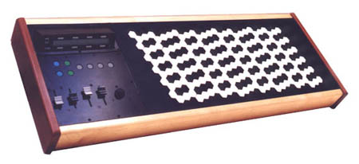

|
MIDI Through provides a simple MIDI through function to the Palm allowing tests of MIDI hardware for the Palm. A simple monitor shows received bytes. |
MIDI Through for Palm OS |
| The MIDI File Printer reads standard MIDI files ands prints from them a new easy-to-read music notation. If you find the usual music notation cryptical, your impression is totally correct. Try out this program if you want to get a more direct access to notated music! | MIDI File Printer for Atari TOS and Win32 |
| The MIDI Enhancer allows you to play microtonal music on a conventional synthesizer supporting the MIDI poly mode (multi mode) or offering GS compatibility. In contrast to conventional microtunable synthesizers (like my former Yamaha TG77 or my current Roland JV-1010), the MIDI Enhancer modulates through the keys together with the piece you play in a musical way. | MIDI Enhancer for Atari TOS and Palm OS |
| Color and fill style selection modules for ACS 2.3 and ACS 3 applications: for the Atari version of the MIDI file printer I implemented 2 modules which you can use in your own ACS applications. | ACS Modules for TOS |
| On my
self-modified Döpfer LMK3 there are a row of black keys
proceeding in "whole tones" and a row of
non-black keys that does the same transposed by a
"half tone". Hence, the principle is the same
as that of Paul Jankó (see below), with the difference
that the same fingering can only be used for 6 keys
without the need to change. For modifiying the keyboard I directly ordered spare parts from the manufacturer F.A.T.A.R. in Recanati (Italy) - mainly 44 D-keys, in which Mrs. Heller kindly helped me very much. Furthermore an EPROM needed to be patched, to which Mr. Döpfer gave me the decisive hint (there is a table with black and white keys ...). In the meantime the case changed a little bit and a modified Roland Juno-D joined it in 2005: Other inventors had the same idea or used similar keyboards. The German company Wersi eventually offers support for the modification of its musical instruments. |
My Chromatic Keyboards |
| Since 2000 December already my keyboard was joined by a chromatic foot pedal with 15 keys. I built it from 2 second-hand pedals with 13 keys each. Thanks to the kind support from W. E. Franz from Wersi! | My Chromatic Foot Pedal |
| The
Hungarian pianist and mathematician invented a new type
of keyboard in 1882: it consisted of 6 rows of keys,
one placed over the other with any 2 of them belonging
together in a way that the lower row (proceeding in whole
tones) started with C, the upper one (also proceeding in
whole tones) started with C#. He wrote > A New
Keyboard < (1886). Source: The Musik-Brockhaus 1982. The advantage of this keyboard: it allows to play in all 12 keys with the same fingering. Transposing becomes a child's play. |
Keyboard by Paul Jankó |
| On 1963 August 30 Johannes Beyreuther applied a keyboard with honeycombed keys for a patent. The patent was committed on 1968 February 29. The picture shows an accordion with such a keyboard as example. The 1. and 3. rows of combs proceed in "whole tones". The row in the mid does the same transposed by a "half tone". | Chromatic Keyboard by Johannes Beyreuther |
| The
commercial T-91 by Riday Systems is a portable MIDI
keyboard that can be shouldered, with a range of 4
"octaves". It was (and is ?) available at: Riday
Systems The key rows proceed in "half tones", which stands in contrast to most other instruments shown here. 1995 it costed $1395. Further features: velocity sensitive, aftertouch sensitive, 128 programmable presets, ... |
Riday T-91 |
| The Monolith offers chromatic key rows that are placed one over the other. So it is related to the Riday T-91. However it amalgates several linear keyboards into one instrument by setting them closely together, thus enabling a player to play on several "virtual" synthesizers at a time with a single hand. |
Heavenbound's Monolith |
Starr Lab's Microzone products have keyboards, that resemble the honeycombed ones of Johannes Beyreuther. In contrast to those, the black-and-white coloring corresponds to classical piano keyboards. Similar to the Monolith, several key rows are placed one over the other to add further possibilities of musical expression to that of pitch in a 2. dimension. |
Starr Lab's Microzone Keyboards |
| Find here a very brief discussion of different tunings, a spread sheet for download and some links leading you to deeper information. | Where the beautiful intervals are |
| A mathematical calculation of the frequencies you can play on a trumpet with 3 valves. Knowing the results might help you in improving your intonation. | The difficulty to tune a trumpet |
{kind=link}
{kind=link}